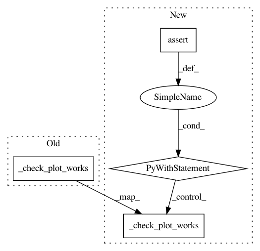

f3a9271cbe0852b86423410d736134408f76f0cd,pandas/tests/plotting/test_misc.py,TestSeriesPlots,test_autocorrelation_plot,#TestSeriesPlots#,71
Before Change
def test_autocorrelation_plot(self):
from pandas.plotting import autocorrelation_plot
_check_plot_works(autocorrelation_plot, series=self.ts)
_check_plot_works(autocorrelation_plot, series=self.ts.values)
ax = autocorrelation_plot(self.ts, label="Test")
self._check_legend_labels(ax, labels=["Test"])
After Change
from pandas.plotting import autocorrelation_plot
// Ensure no UserWarning when making plot
with tm.assert_produces_warning(None):
_check_plot_works(autocorrelation_plot, series=self.ts)
_check_plot_works(autocorrelation_plot, series=self.ts.values)
ax = autocorrelation_plot(self.ts, label="Test")
self._check_legend_labels(ax, labels=["Test"])
def test_lag_plot(self):
from pandas.plotting import lag_plot
In pattern: SUPERPATTERN
Frequency: 3
Non-data size: 4
Instances
Project Name: pandas-dev/pandas
Commit Name: f3a9271cbe0852b86423410d736134408f76f0cd
Time: 2020-12-22
Author: 37011898+mzeitlin11@users.noreply.github.com
File Name: pandas/tests/plotting/test_misc.py
Class Name: TestSeriesPlots
Method Name: test_autocorrelation_plot
Project Name: pandas-dev/pandas
Commit Name: f3a9271cbe0852b86423410d736134408f76f0cd
Time: 2020-12-22
Author: 37011898+mzeitlin11@users.noreply.github.com
File Name: pandas/tests/plotting/test_misc.py
Class Name: TestDataFramePlots
Method Name: test_andrews_curves
Project Name: pandas-dev/pandas
Commit Name: f3a9271cbe0852b86423410d736134408f76f0cd
Time: 2020-12-22
Author: 37011898+mzeitlin11@users.noreply.github.com
File Name: pandas/tests/plotting/test_misc.py
Class Name: TestDataFramePlots
Method Name: test_radviz